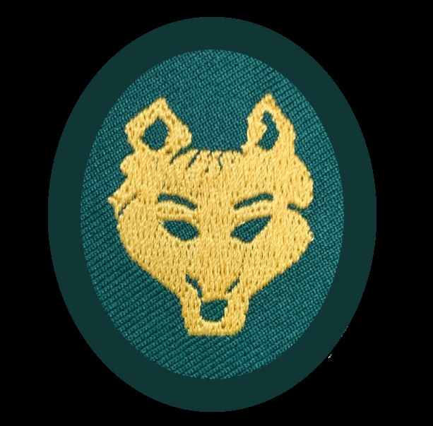

|
Wilderness Ramblers Nature and Service for 6-8 Year Olds |
|
 |
We are a Jersey City-based co-ed scouting group for kids ages 6-8!
|
The Wilderness Ramblers are for you if you and your child want to:
- Go camping
- Go on hikes and outings in nature
- Learn to respect the environment and other children
- Earn badges in safety, nature, crafting, and service
|
|
|
We are part of the Outdoor Service Guides. OSG is coed, welcoming, and parent led |
|